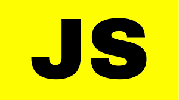

Python is an interpreted, object-oriented, high-level programming language with dynamic semantics. Its high-level built in data structures, combined with dynamic typing and dynamic binding, make it very attractive for Rapid Application Development, as well as for use as a scripting or glue language to connect existing components together. Python's simple, easy to learn syntax emphasizes readability and therefore reduces the cost of program maintenance. Python supports modules and packages, which encourages program modularity and code reuse. The Python interpreter and the extensive standard library are available in source or binary form without charge for all major platforms, and can be freely distributed.
C-programming
C is a general-purpose programming language that is extremely popular, simple, and flexible to use. It is a structured programming language that is machine-independent and extensively used to write various applications, Operating Systems like Windows, and many other complex programs like Oracle database, Git, Python interpreter, and more.
Java
JAVA was developed by James Gosling at Sun Microsystems Inc in the year 1995, later acquired by Oracle Corporation. It is a simple programming language. Java makes writing, compiling, and debugging programming easy. It helps to create reusable code and modular programs. Java is a class-based, object-oriented programming language and is designed to have as few implementation dependencies as possible. A general-purpose programming language made for developers to write once run anywhere that is compiled Java code can run on all platforms that support Java. Java applications are compiled to byte code that can run on any Java Virtual Machine. The syntax of Java is similar to c/c++.
Front End Skills
HTML
HTML stands for hypertext markup language. It's made of keywords and commands that web designers use for creating websites.
Hypertext is text with links that readers can simply click on to go to another page or another part of the page. Meanwhile, markup language uses tags or plain text with special markings to define the sections of a page, such as headers and footers, and other elements, including tables and images.
HTML is considered one of the three essential tools in webpage creation: HTML provides the structure or the way text, pictures, and so on will appear on the website.
CSS (Cascading Style Sheets)
CSS stands for Cascading Style Sheets. It describes how Html elements should be displayed on screen. It is a powerful tool for web designers to change the design and control over web pages that how it should be displayed. It is supported by all browsers and is designed primarily to separate the document content from document presentation.
It was developed by W3C (World Wide Web Consortium) in 1996. Term cascading in CSS implies the fact that you can apply multiple style sheets to a single web page. Extension used to save CSS files is ".css".
Java script

JavaScript is a dynamic computer programming language. It is lightweight and most commonly used as a part of web pages, whose implementations allow client-side script to interact with the user and make dynamic pages. It is an interpreted programming language with object-oriented capabilities.